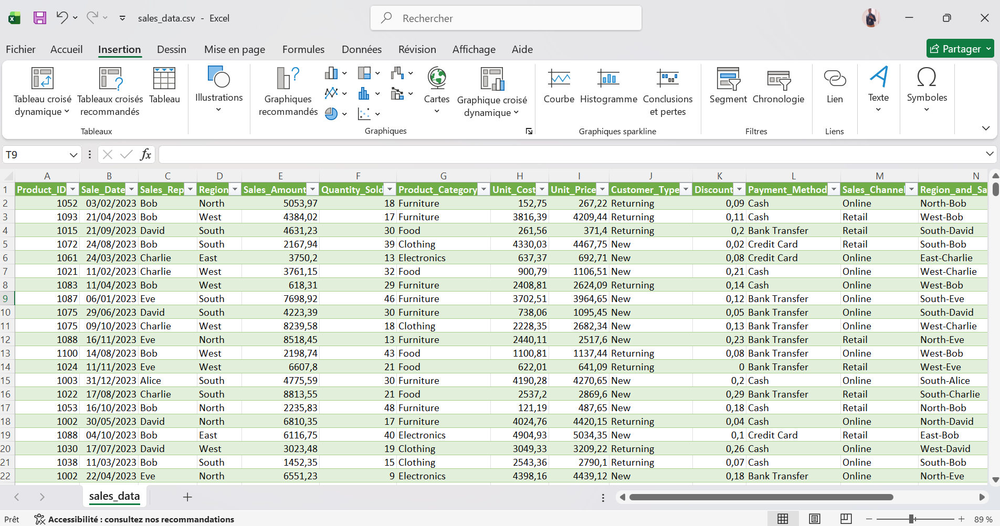

Sales Dashboard Analysis
Interactive Power BI dashboard analyzing sales performance, customer behavior, regional trends, and profit distribution.
Dataset
The dataset contains transactional sales data including products, regions, sales representatives, customer types, discounts, payment methods, and sales channels.
The objective of this project was to analyze business performance and identify the main factors influencing sales and profitability.

Data Cleaning & Transformation
Data preprocessing and transformation were performed using Power Query in Power BI.
- Renamed and formatted columns
- Handled data types
- Created calculated fields
- Prepared data for dashboard visualization
This step ensured data consistency and improved the quality of the analysis.

Dashboard Overview
This dashboard provides a global overview of sales performance, profits, margins, and quantity sold.
Interactive filters allow users to analyze data by:
- Customer Type
- Product Category
- Region
The dashboard highlights monthly sales evolution and overall business performance.

Category & Region Analysis
This section analyzes sales and profits across different product categories and regions.
- Furniture and Clothing generated strong profits
- East and West regions recorded the highest sales performance
- Regional comparisons helped identify profitable markets
These insights can support strategic business decisions and market optimization.

Customer & Payment Analysis
This dashboard focuses on customer purchasing behavior, payment methods, and sales representatives' performance.
- Returning customers contributed significantly to revenue
- Online and Retail channels showed balanced sales distribution
- David and Bob were the top-performing sales representatives
The analysis also provides insights into customer preferences and payment trends.

Tools & Technologies
Project Files
You can download the Power BI dashboard file below.
Download Power BI File